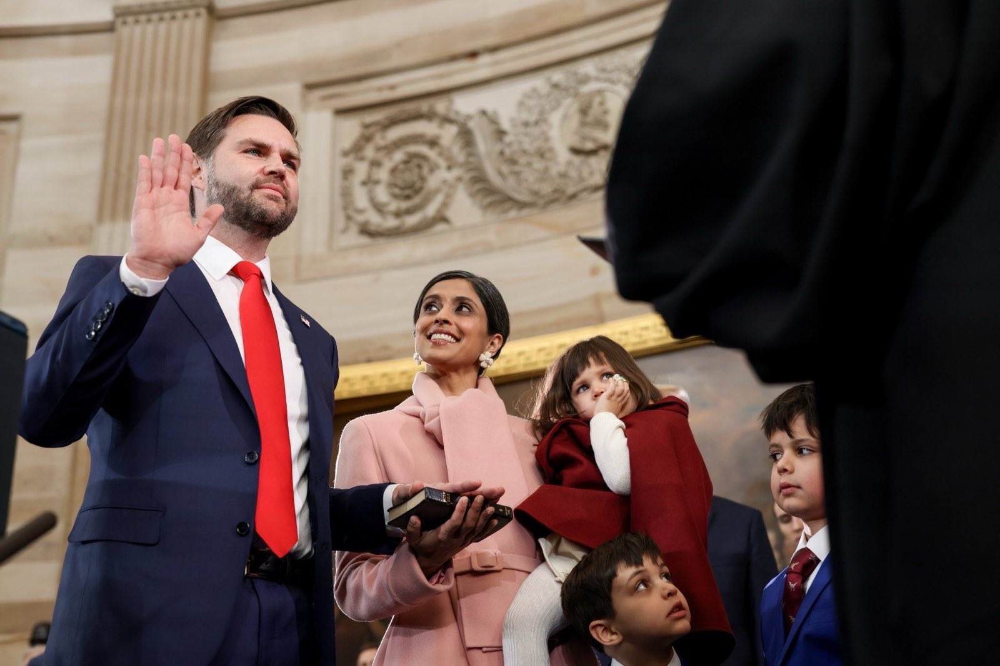
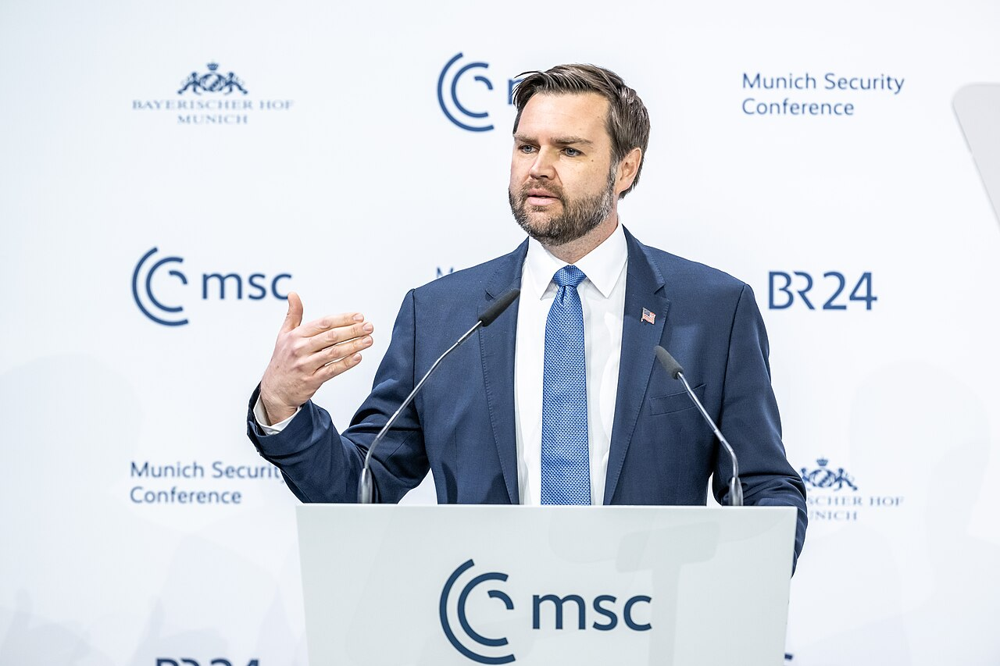
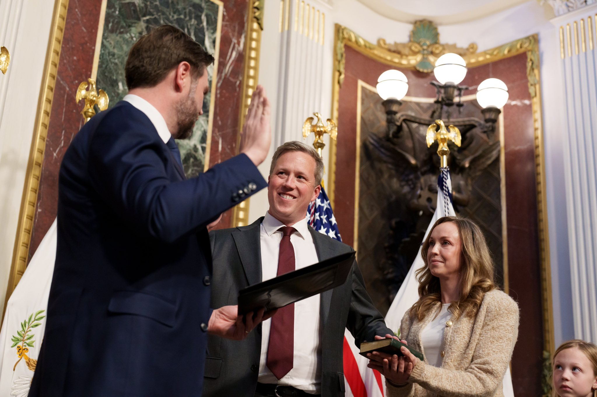
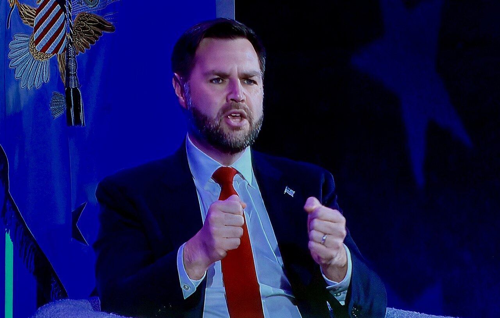
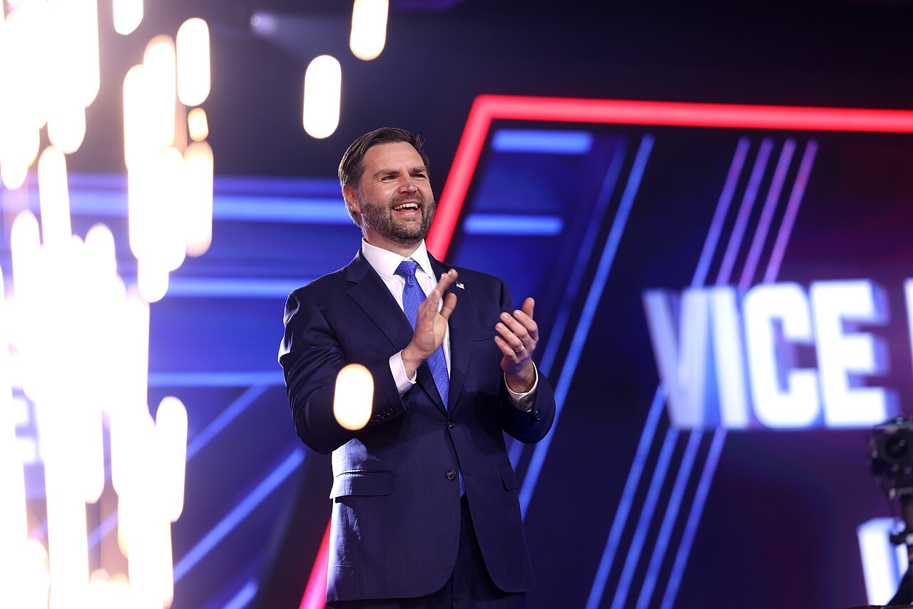
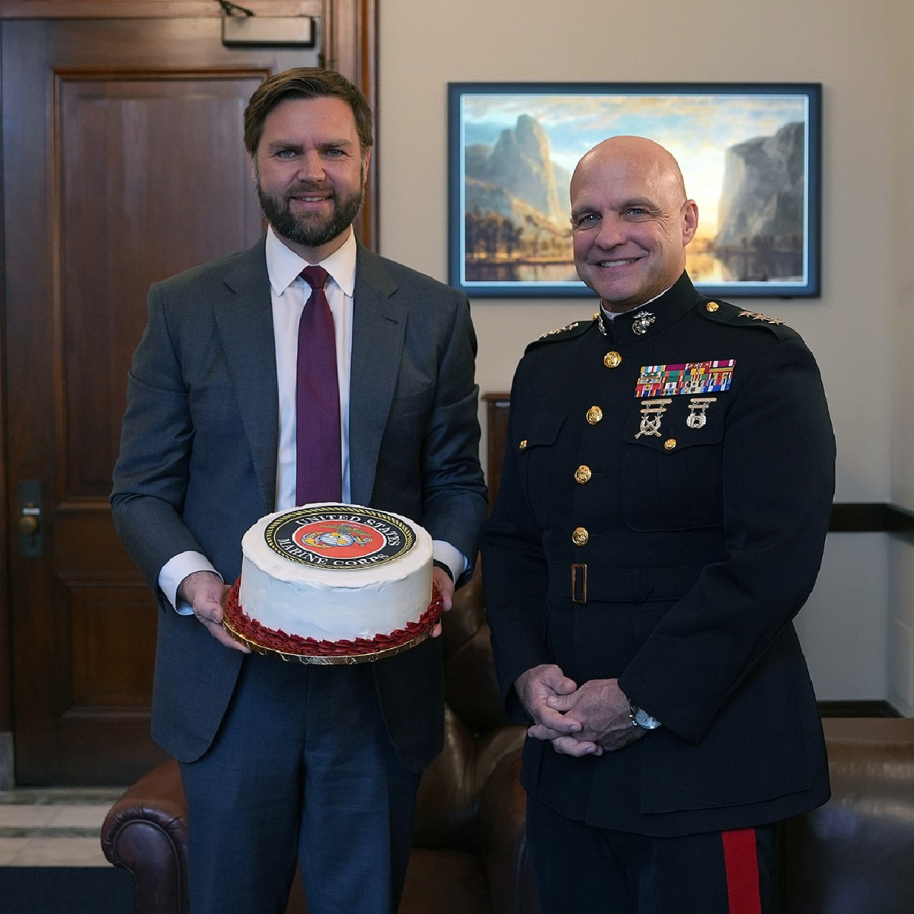

The unofficial gallery
JD, On Camera
JD Vance from the Marine Corps and the Senate through the vice presidency — official photos, White House speeches, and the memes he posted himself.
Last updated November 26, 2026, 8:12 AM PT. Photos are U.S. government public-domain works or Creative Commons images, credited in the footer. Videos and posts are official White House and JD Vance embeds.
VP’s Media Highlights
Fifteen photographs, from official portraits to the trail and the vice presidency. Hover a picture for its title; full credits are in the footer.


 · Public domain")


 · CC BY 4.0")






 — United States Congress / U.S. Senate · Public domain")

The Official Reel
Speeches, press briefings, and official trip video from The White House YouTube channel and Vice President Vance’s official X accounts.
Remarks at the 61st Munich Security Conference
February 14, 2025 · Official channel: The White House (@WhiteHouse)
Commencement Address to the U.S. Air Force Academy
May 2026 · Official channel: The White House (@WhiteHouse)
Fraud Task Force Press Conference
October 21, 2026 · Official channel: The White House (@WhiteHouse)
Press Briefing with Karoline Leavitt and the Vice President
January 8, 2026 · Official channel: The White House (@WhiteHouse)
When the VP Memes
Only memes posted directly by JD Vance on his official @JDVance account, embedded via X’s official embed and linked back to each original post.